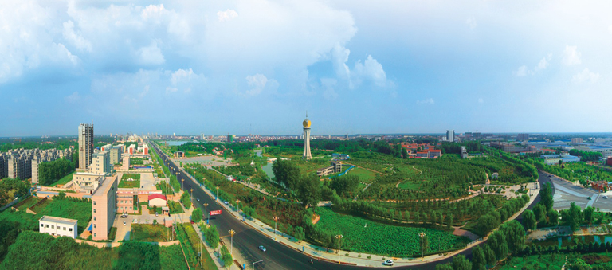
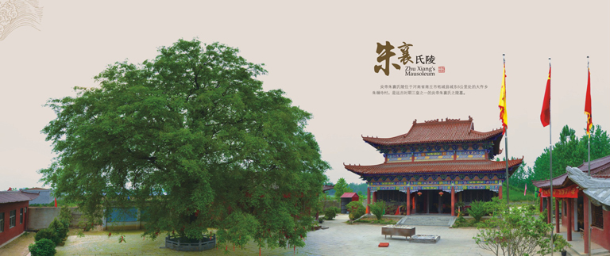
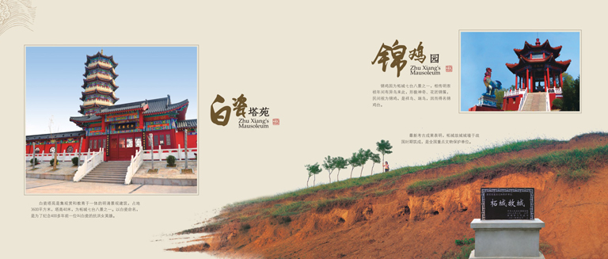
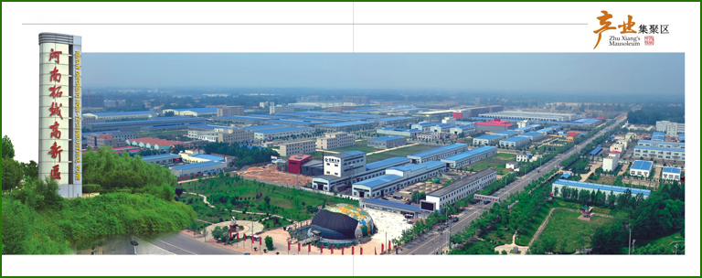
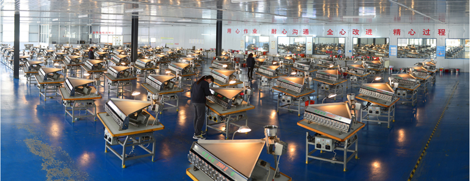
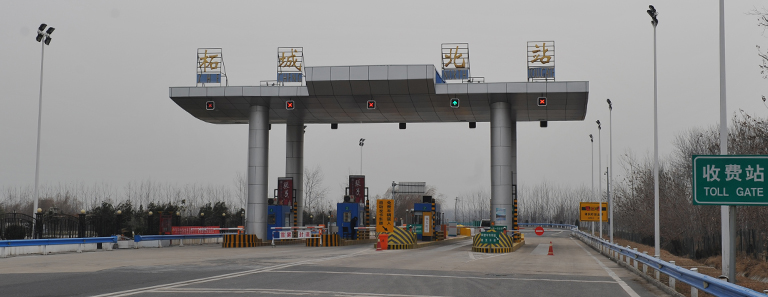
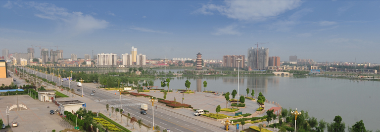
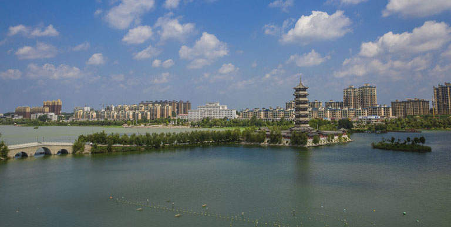

柘城县位于河南省东部、商丘市西南部，总面积1048平方公里，耕地面积107万亩，辖22个乡镇、办事处，总人口106万。

柘城历史悠久。柘城的历史与中华民族的历史相伴相生，源渊流长。这里是远古时期三皇五帝中三皇之一，炎帝朱襄氏的故里。在这里，炎帝尝百草、植五谷，教授人类耕而食、织而衣，开启了中原农业文明的历史；以柘丝、良桐制成五弦瑟，用琴瑟之声除害安民乐业，开创了中华礼乐文化的先河。

夏称“株野”，商名“秋地”，秦时置县，至隋更名柘城，至今已有2200多年的县治历史。春秋时期著名的大棘之战、泓水之战就在此发生，淮海战役总前委指挥部曾在此设立，柘城历来为兵家必争之地。孔子困匡、子路问津等儒家经典故事均出处于柘城。古城遗址和千年古柘桑、银杏树、皂角树见证了柘城历史的沧海桑田。肃穆庄严的朱襄陵，文思悠久的襄山书院，古色古香的白瓷塔苑，名传古今的“七台八景”，国家重点文物保护单位山台寺遗址，都为古老的柘城蕴积了厚重的文化积淀，平添了生命的灵性和神奇的色彩。
柘城资源丰富。盛产小麦、玉米、棉花、油料、林果、蔬菜、畜产品等，是全国平原绿化先进县、全国生猪调出大县、河南省林业生态示范县，享有“胡芹之乡”“泡桐之乡”的美誉，胡芹被确定为国家地理证明标志商标。柘城是国家粮食生产核心区，优质粮种植面积100万亩，粮食产量稳定在16亿斤以上，是全国产粮大县、全国粮食生产先进县。
柘城三樱椒享誉全国，是全国辣椒生产百强县，被誉为中国三樱椒之乡，种植面积40万亩，年产干椒12万吨，豫鲁苏皖四省最大的辣椒大市场年交易量突破20万吨，占全国总交易量的30%以上，是全国辣椒产品购销集散基地。新发现的东起柘城、西至通许的通柘煤田储量230亿吨，是河南省迄今为止最大的煤田，柘城将成为未来的新兴能源城市。

柘城特色明显。柘城工业发展突飞猛进，26平方公里的产业集聚区是全省十快产业集聚区、全省先进产业集聚区和省级高新技术产业开发区，进入了全省星级产业集聚区行列。

金刚石超硬材料产业特色明显，集聚了力量新材料、惠丰钻石科技、厚德钻石科技等63企业，形成了金刚石单晶合成、微粉加工、制品生产较为完整的产业链，微粉产量和出口量分别占全国市场份额的70%和50%，是国家超硬材料及制品高新技术产业化基地、河南省超硬材料知名品牌创建示范区，中国金刚石微粉之都的称号实至名归。医药制造产业以华润双鹤药业、美兰生物科技、华商药业为龙头，突破关键技术，优化产品结构，向终端药品、先进药品以及保健药品拓展，打造河南重要的医药生产基地。皮件皮具产业蓄势待发，以年产300万张的全国最大的兰湿皮加工企业中牛集团为基础，以2000亩的皮件皮具加工产业园为平台，引入品牌企业，向皮衣、皮鞋、箱包等下游产品延伸，打造中原经济区重要的皮件皮具加工基地。

柘城交通便利。柘城方圆50公里之内有京九和陇海铁路、连霍和大广、济广高速，郑徐高铁将于今年9月正式运行，商合杭高铁即将建设，商丘机场已报国家批准，商周、永登、阳新3条高速在柘城成三角形连接，区位优越，交通便利；三洋铁路的重要组成部分禹亳铁路在柘城建站设点，拉近了与长江经济带的距离；涡河航运即将开通，成为江淮流域又一“水上走廊”。柘城正依托逐渐显现的交通区位优势，加快建设市场物流园区、电商产业园，着力发展现代物流产业和电子商务产业发展，致力打造周边区域性商贸物流中心和全省知名的电子商务产业发展示范县。

柘城生态宜居。实施“北扩南进、东延西伸”城市发展战略，旧城改造卓有成效，新城建设风生水起，城市管理井然有序，特色商业区商贸繁荣，城市面积扩展到24平方公里，城市人口达到了22万，绿化覆盖率达到39%以上，绿地率36%以上，全年优良天气达到322天。濒临灭绝的被称之为“鸟中熊猫”的国家珍稀保护鸟类震旦雅雀在此栖息。被誉为“商丘新八景”之一的千树园、容湖生态公园，跻身于国家水利风景名胜区、国家湿地公园、国家ＡＡ级旅游景区。以容湖2000亩水域为核心，惠济河、古黄河、小沙河、余河坡、商柘运河等5条河流穿城而过，借助于国家重点工程引江济淮工程的实施，致力打造“亲水城市”。目前，正在开展的四城创建活动，是在巩固提升省级园林城市、卫生城市、文明城市的基础上，争创全国文明城市、国家园林城市、国家卫生城市、国家森林城市，让千年古城更加靓丽多姿。

柘城发展较快。主要经济指标增速持续位居商丘市前列，产业集聚区、新型城镇化、招商引资和特色商业区等重点工作持续领跑全市。先后荣获全国粮食生产先进县、全国科技进步先进县、全国生态示范区，全省对外开放工作先进县、省林业生态县，省级园林城、卫生城、文明城、省双拥模范城、全省教育工作先进县、全省职业教育强县、河南省科普示范县、全省平安建设先进县等省级以上荣誉。近五年来，全县生产总值由2011年的115亿元增加到2016年的184亿元，年均增长9.9%；公共财政预算收入是2011年的近3倍，年均增长22.6%；社会固定资产投资累计超过695亿元，年均增长14.5%；社会消费品零售总额年均增长13%。柘城进入了厚积薄发、转型升级、跨越发展的新阶段。